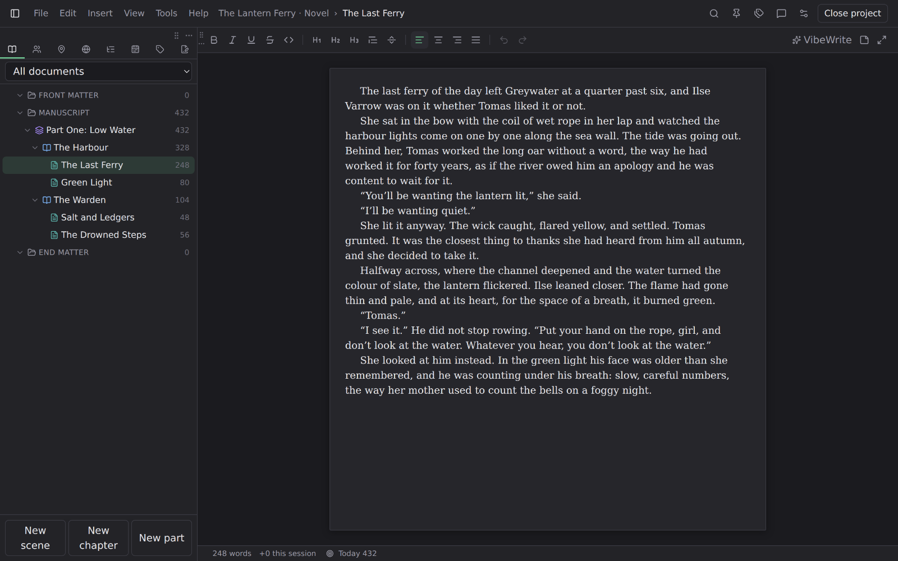

Write
A quiet page and a binder that bends to your book.
Parts, chapters, and scenes in a binder you can nest however your story is built, with word counts at every level. The page is a book-width column with your choice of type, a focus mode that hides everything else, and autosave on every pause.
- Synopsis, notes, POV, location, and timeline beside every scene
- Outline, timeline, goals, and writing statistics
- Automatic backups, drafts, and snapshots you can compare
